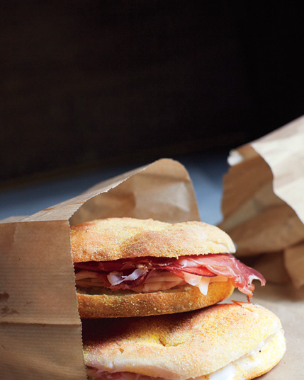

- View the places mentioned in this story on a map
- View this story's photos in a gallery
FEW PLACES ON EARTH can trade as robustly in travel fantasy fulfillment as Rome. Grandeur and grit meet in its narrow, shade-dappled streets and in the patrician stretches of its piazzas. Its pearlescent light can tease a sacred beauty out of even the most profane, tourist-thronged scene, and its citizens can turn as banal an act as taking out the garbage into a master class in insouciant comportment (the word for which, incidentally, is sprezzatura—an inimitably Italian quality that Romans seem to have a corner on). Most inspiring of all, the appeal of the timeless and the electric draw of the now merge more dynamically here than in any other European city. Neighborhoods in the heart of town—the ones we thought we knew—have been reinvigorated with stylish hotels and boutiques. And as in places like London and New York, where the outer boroughs are the new centers of gravity, districts farther afield are being transformed by a creative group of chefs and shop owners. This is your guide to the city's sweet spots, where tradition and innovation are in perfect balance.
The lounge at D.O.M is one of a number of spots for a nice cocktail in Rome.
Centro Storico
Lots of people recognize the Via Giulia in photos, since it’s one of the most photogenic streets in Rome; probably not quite as many know it firsthand, tucked as it is into a curve of the Tiber, away from the more heavily trod reaches of the Centro Storico. Fewer still are familiar with its illustrious pedigree: The half-mile-long, ruler-straight stretch of sanpietrini stones was constructed in 1508 by Donato Bramante, on the order of Pope Julius II, as one of Renaissance Rome’s first major urban-renewal projects. Lined with sixteenth- and seventeenth-century noble palaces and divided by an ivy-covered arch designed by Michelangelo, it passes through the ancient districts of Ponte and Regola. It is tranquil, beautiful, and seriously posh.
It’s here that the architect Antonio Girardi has opened D.O.M, a 24-room hotel in a former Claretian monastery. The building’s exterior is typical Roman pastel-washed prettiness, but inside the palette is all whites, grays, and browns punctuated by rich linens and velvets, brass, and leather furniture. Beneath the coffered ceilings, the walls are inlaid with 400-year-old flagstones from the nearby Church of Santa Lucia del Gonfalone, installed in the nineteenth century and embossed with Latin liturgical exhortations commencing with D.O.M, the acronym for Deo Optimo Maximo (“To God, most good, most great”).

LEFT Antonio Girardi, architect and co-owner of the 24-room hotel D.O.M. RIGHT the Colosseum, in the Monti neighborhood.
The relative calm here belies an unbeatable central location. A hop to the south end of the street and a skip across the Ponte Sisto take you to the Piazza Trilussa, gateway to the humming bars and trendy boîtes of Trastevere. Some of Rome’s best shopping is on the neighboring Via dei Pellegrini, Via di Monserrato, and Via dei Banchi Vecchi, where Laura Urbinati sells her signature monochrome bikinis, which can be spotted on beaches from Gallipoli to Capalbio. It’s a five-minute stroll to the genial chaos of the Campo dei Fiori and, five minutes beyond that, the Via dei Giubbonari, where you’ll find the beloved salumeria/wine bar Roscioli. Everyone extols brothers Alessandro and Pierluigi Roscioli’s genius, from the prosciutto-studded bread to what has to be the city’s most faultless cacio e pepe. (Perhaps the thing it hasn’t perfected is amiable and refined service—but no one in Rome should expect that.) A takeout baccalà sandwich wrapped in paper from Dar Filettaro—a block up from Roscioli, set back from the street in a tiny piazzetta—is a greasier, messier, but equally transporting affair.
Pasta perfetta at the salumeria/wine bar Roscioli, in the Centro Storico.
Between D.O.M and the Piazza Navona lies the Via del Governo Vecchio. This is Rome’s answer to New York’s Elizabeth Street in Nolita: home to independent boutiques and a couple of superlative vintage emporiums, where anyone with a hundred-odd euros and a serious inclination to dig can turn up gems like a ladies’ Belstaff motorcycle jacket circa 1974. The street’s appeal was enhanced with the arrival of jewelry designer Delfina Delettrez—daughter of Silvia Venturini Fendi—who opened her first boutique here in 2011. Delettrez’s totemic design motifs—evil eyes, skulls, jewel-encrusted spiders, and attenuated bones recalling reliquaries—are as beautiful as they are provocative. Equally imaginative are the jewelry designs by Paolo Giacomelli and Roberta Paolucci at Iosselliani R-01-IOS, where the pieces incorporate brass and silver into chain mail or tribal feather motifs.
The cocktail lounge and a guest room at J.K. Place Roma.
Just around the corner from Iosselliani is D.O.M’s primary competition. J.K. Place Roma is the third J.K. hotel from Florentine entrepreneur Ori Kafri. Its 30 rooms are a stylish retrofit of a former school, situated about halfway between the august angles of Richard Meier’s Ara Pacis Museum and the sceney Piazza San Lorenzo in Lucina. (Ciampini, at number 29 on the piazza, is your HQ here: perfect morning espresso stop; humming aperitivo scene; best pistachio gelato in town; air-kissing all day.) The hotel’s flamboyant style favors neutrals doused with color (corridors are upholstered in turquoise and lime raw silk) and reproduction antiquities rubbing marble shoulders with mid-century designs. The hotel achieved cachet with the Roman movida more or less from the day it opened; it’s an ideal place to feel at the center of things.

Cafe, senza cornetto at J.K. Place Roma
Monti
Wedged between the crumbling monoliths of the Imperial Fora and the staid government palaces of Quirinal Hill, the lemon-and-apricot facades lining Monti’s eighteenth-century streets are lovely, if not terrifically distinct from those in many other parts of town. Over the last several years, though, a new generation of adoptive Monticiani have given it an indie vibrancy that’s made it a destination in its own right. This is evident in the "kilometer-zero" mantra of Urbana 47, an industrial-chic space serving hyper-locally sourced meats and produce (an adjacent art-house movie theater, Cinema Urbana 47, made its debut in 2012). At Aromaticus, owners Luca De Marco and Francesca Lombardi bring culinary bona fides—they worked in Rome as the chef at Open Baladin and the sommelier at Open Colonna, respectively—to their bistro meets urban farming emporium. In addition to the potted herbs, designer trowels, and organic produce, there’s an excellent lunch menu of salads, cheese plates, and charcuterie to complement Luca’s sublime steak tartare. At the black-and-white-tiled Gaudeo, you’ll find the paradigm of the paninoteca: There are myriad combinations available, but stick to two or three ingredients in your panino (the turkey and Sardinian goat’s milk ricotta is a favorite) so that the quality of each really shines.
- 
Left Enrico Vitalini, a salumiere at Roscioli, the beloved family-run restaurant and wine bar. Right Offerings at the paninoteca Gaudeo.
Shop owners and designers likewise find Monti’s streets friendly to the trade of the quirky and the twice-loved (after the Via del Governo Vecchio, Monti has the city’s best vintage stores). The women’s fashion shop B stocks the often-monochromatic designs (the B is for both black and bianco) of independent and established European labels, from Faliero Sarti pashminas to Céline trousers. At DOP Concept Store, Arabella Valdieri sources only a few pieces from niche labels to supplement her own small line of soft, deconstructed separates—whether you walk out with a kidskin clutch or a slim linen sundress, chances are you’ll be the only one back home with it. And of course, if it’s Saturday or Sunday, you’ll hit the Mercato Monti. What used to be a better-than-most flea market has evolved into a showcase of small purveyors selling handmade goods and first-rate vintage. On any given day, the mix might include 1950s jewelry, handmade leather sandals, and '70s Gucci totes.

The Presentation Chapel in St. Peter's Basilica.
Testaccio and Ostiense
Baroque domes, pastel frescoes, wisteria-draped piazzette: You’ll find none of the quintessential Roman sights in Testaccio and Ostiense, which abut each other along the silver-brown stretch of the Tiber below Trastevere. Dirt and industry are deeply embedded in their DNA: Testaccio’s late-nineteenth- and early-twentieth-century grid of middle-class apartment buildings rests on ancient Roman landfill, comprising tens of thousands of terra-cotta urns abandoned millennia ago after being off-loaded from ships bearing supplies from the imperial provinces. Ostiense’s skyline is characterized as much by steel bridges and graffitied warehouses as by the famous Pyramid of Cestius; its premier museum, the Centrale Montemartini, is housed in a decommissioned power station.
But what these two neighborhoods lack in camera-readiness they make up for in genuine urban buzz—and for food lovers, they are Rome’s place to be. Make a pilgrimage to the Testaccio Market, which still retains its special Roman brand of industrious cacophony, to stock up on prosciutto, fresh chicory, and just about everything in between, with a side trip to the 150-year-old delicatessen Volpetti, a must for hand-cut pasta, anchovies in Sicilian olive oil, or any one of the seven different preparations of artichokes.
Left At Porto Fluviale, a new gastro-hub in the Ostiense area.
Right Clementines at the Testaccio Market.
The new gastronomic nexus here is Porto Fluviale, a dining-drinking-snacking mecca spread across a 10,000-square-foot warehouse that was formerly part of the Magazzini Generali, Rome’s principal wholesale market. Now it’s a cavernous series of spaces finished with pale-brick walls, industrial work lamps, and reclaimed-wood shelves offering a staggering bounty of Italian gastronomia. There’s a bar that hums from late morning to the wee hours—the place for both a perfect espresso and a Campari spritz—along with a pizzeria centered around two massive wood ovens, one for thin-crust pizze romane, the other for the pillowy Neapolitan version. Elsewhere there’s a tapas bar, a patisserie/tearoom, and a lounge stocked with leather club chairs and chesterfield sofas.
Due northeast of Porto Fluviale is the former Ostiense Air Terminal, home since June 2012 to Eataly, a four-story hymn to all that is superlative in Italian gastronomy and viticulture (it has a sister location in New York). The country’s finest chefs make regular guest appearances in its show kitchens, and some of its best-loved niche food specialists—Teo Musso for beer, Roberto Battaglia for mozzarella di bufala, Alessandro Frassica for panini, and Slow Food master Sergio Capaldo for meat—have dedicated premises here.
The Forum of Augustus, as seen from the Via Baccina in Monti.
Pigneto
People will tell you that Pigneto is Rome’s Brooklyn. Whether you consider this a selling point or not, there is undeniably something of that borough’s cool to be found along the Via del Pigneto, an affiche-plastered pedestrian stretch set north of the rusted train tracks radiating out from Termini Station. A Communist enclave in the early 1900s, then a dodgy area known for drugs and prostitution, Pigneto has spent the last few years getting fancied up—although you might still be treated to an authentic street brawl when dining alfresco atPrimo. The restaurant is a stalwart of the Pigneto scene, a place where the lackadaisical service is offset by a few standout dishes, among them a heavenly fava puree topped with burrata. Primo’s Tricker’s-wearing owners also have the nearby Rosti, whose menu mixes maremmana-beef burgers and pastrami sandwiches with half a dozen pizze bianche and a Sunday-afternoon pasta al forno lunch.
It’s a magnet for the neighborhood’s creative classes and young parents, whose little ones gambol freely in its 7,500-square-foot garden strung with fairy lights. And you'd be remiss not to stop in at Necci, an institution since 1924; Pasolini famously filmed (and slummed) here in the early '60s, and now its English co-owner, Benjamin Hirst, an alumnus of Fergus Henderson’s kitchen, has given it a shabby-cool makeover and a refined-rustic menu. Anytime between 8 a.m. and 1 a.m., seven days a week, is a good time to go, given that Necci morphs throughout the day from coffee-and-cornetto pit stop to aperitivo hot spot to serious osteria turning out fresh takes on typical dishes, from artichokes to eel. The preponderance of whiskers and sockless brogues among the clientele may indeed suggest Brooklyn—but the flavors are unmistakably Rome.